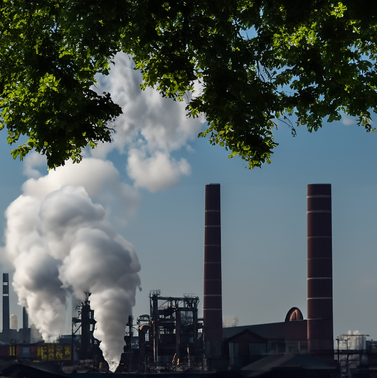
Broaden and deepen our understanding of the Earth Science
UNIST IRIS LAB
3D Earth Model: NASA Visualization Technology Applications and Development (VTAD).
Sustainable Development Goals (SDGs)
At IRIS Lab, our research supports the Sustainable Development Goals (SDGs, https://www.un.org/sustainabledevelopment), with a focus on developing mitigation strategies and actionable solutions to tackle the challenges of climate change.
Click on buttons below to explore the corresponding research topics.
(The content of this publication has not been approved by the United Nations and does not reflect the views of the United Nations or its officials or Member States.)
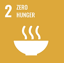
Goal 2: Zero hungerVIEW ALL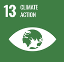
Goal 13: Climate actionVIEW ALL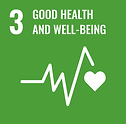
Goal 3: Good health and well-beingVIEW ALL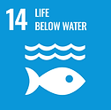
Goal 14: Life below waterVIEW ALL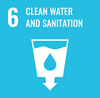
Goal 6: Clean water and sanitationVIEW ALL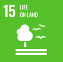
Goal 15: Life on landVIEW ALL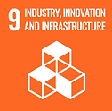
Goal 9: Industry, innovation and infrastructureVIEW ALL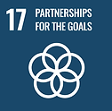
Goal 17: Partnerships the goalsVIEW ALL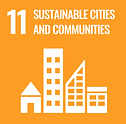
Goal 11: Sustainable cities and communitiesVIEW ALLAbout IRIS
The IRIS lab utilizes remote sensing, GIS modeling, and artificial intelligence techniques to broaden and deepen our understanding of the Earth science under climate variability/change, and leverages this knowledge to better manage and control critical functions related to terrestrial, coastal, and polar ecosystems, natural and man-made disasters, water resources, and carbon sequestration.
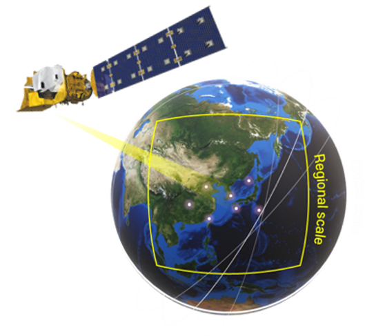
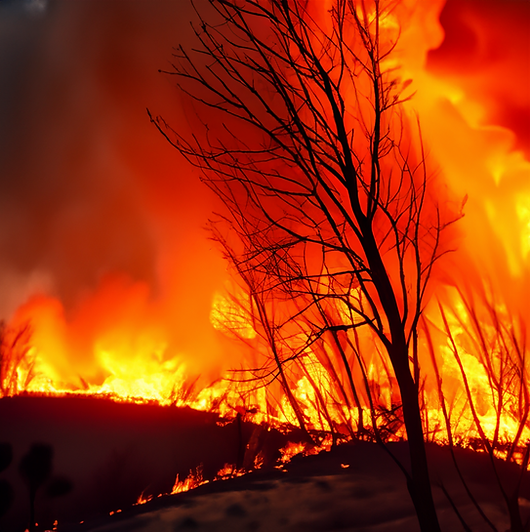
Disaster monitoring and prediction
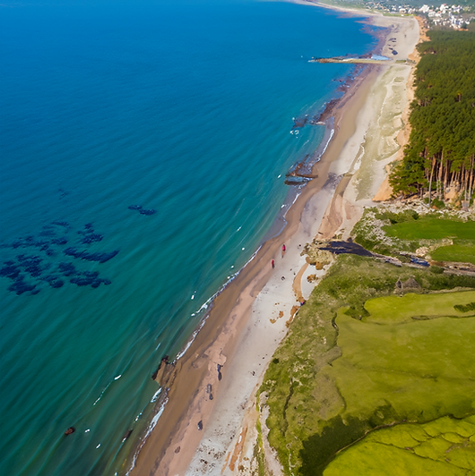
Earth and environmental science
Artificial intelligence and deep learning
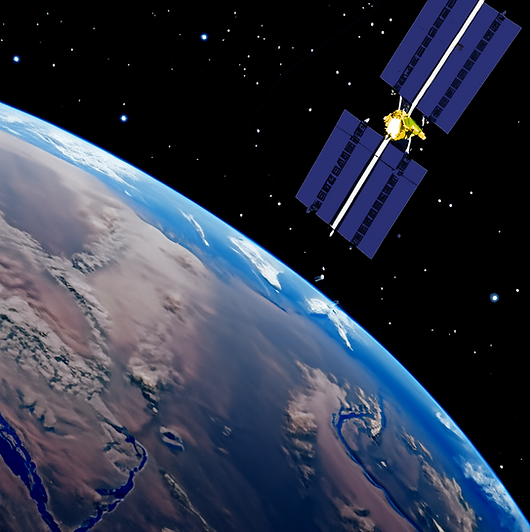